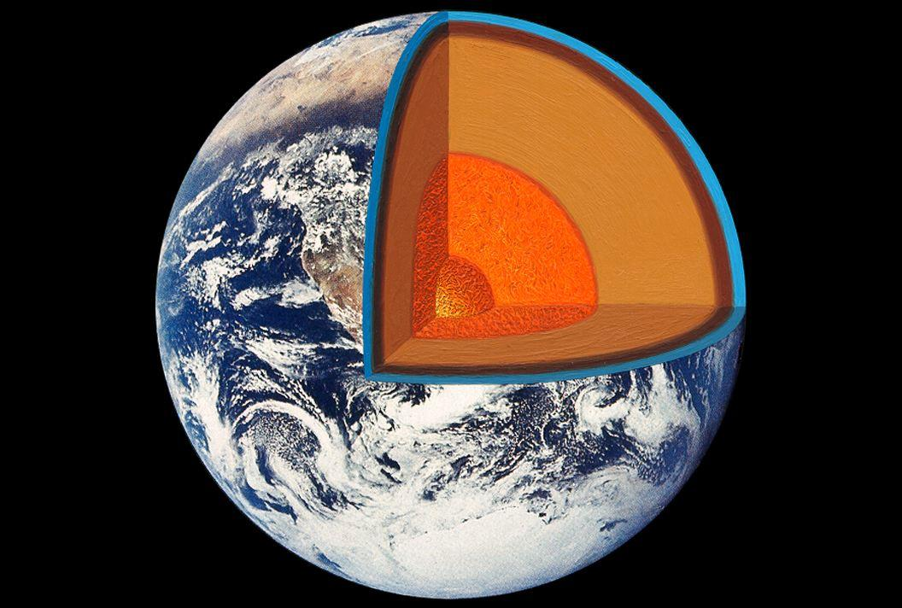

Земля — это неидеальная сфера, она слегка сплюснута. Океан практически не изучен, ученым удалось исследовать только 5% от всего его объема. Скорость вращения Земли вокруг Солнца — 107 826 км/ч. И на самом деле год на Земле длится не 365, а 365,2564 дней.